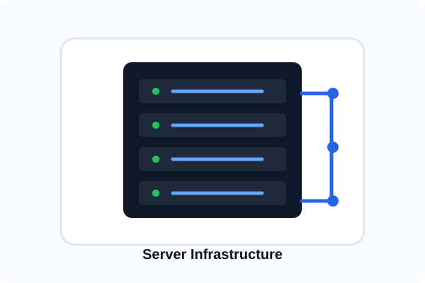

Server Planning & Selection
Choosing the right server infrastructure for your business needs.
Server decisions impact your entire business—uptime, security, performance, and costs all depend on the right infrastructure. We help you evaluate options: on-premises servers, hybrid approaches, or cloud solutions, based on your users, applications, storage needs, security requirements, and budget.
- Workload analysis and server sizing
- On-premises vs. cloud evaluation
- Hardware and software recommendations
- Budget and ROI planning
- Vendor selection and negotiation
